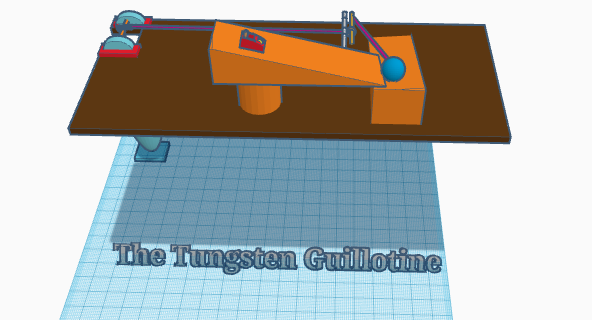
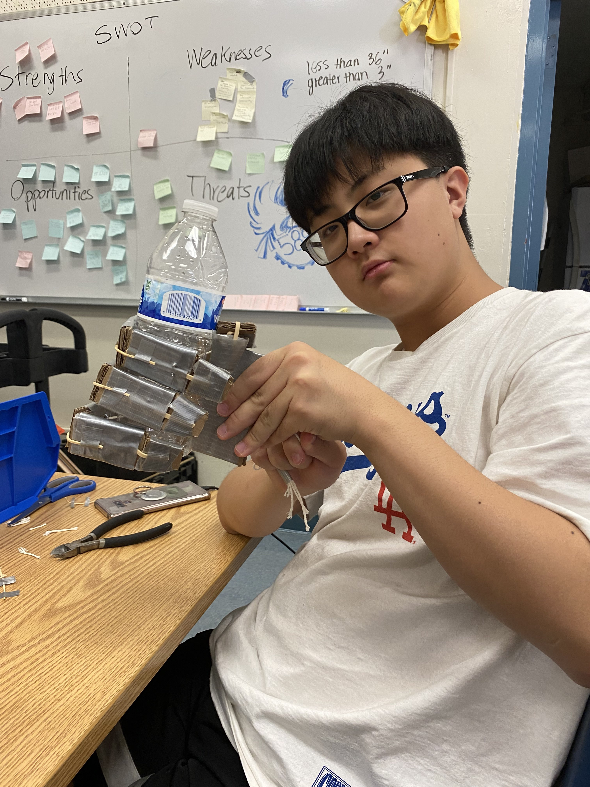
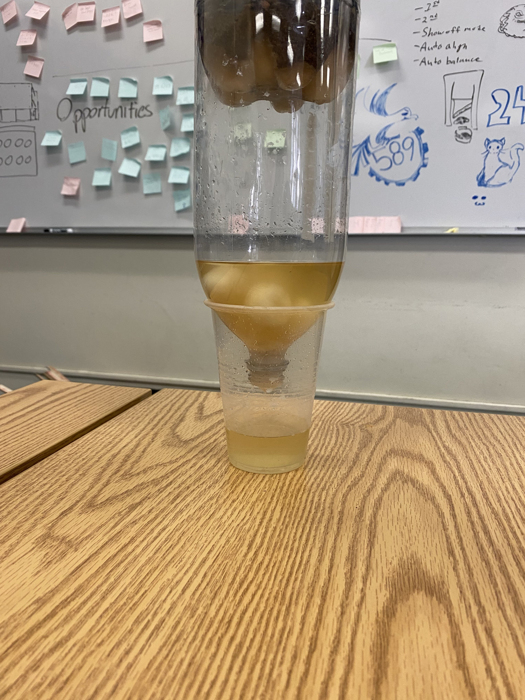
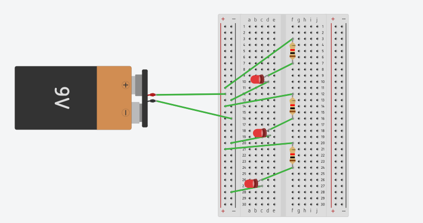
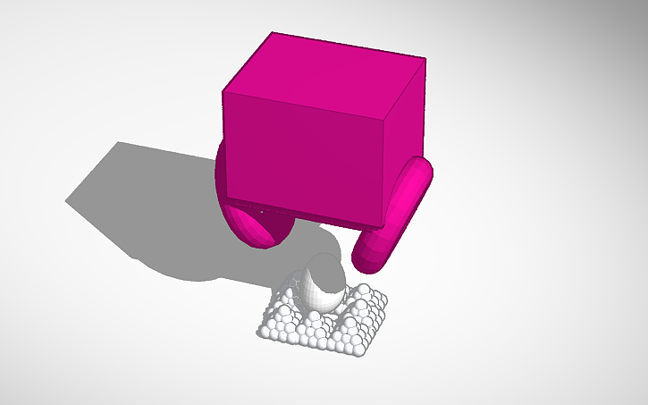
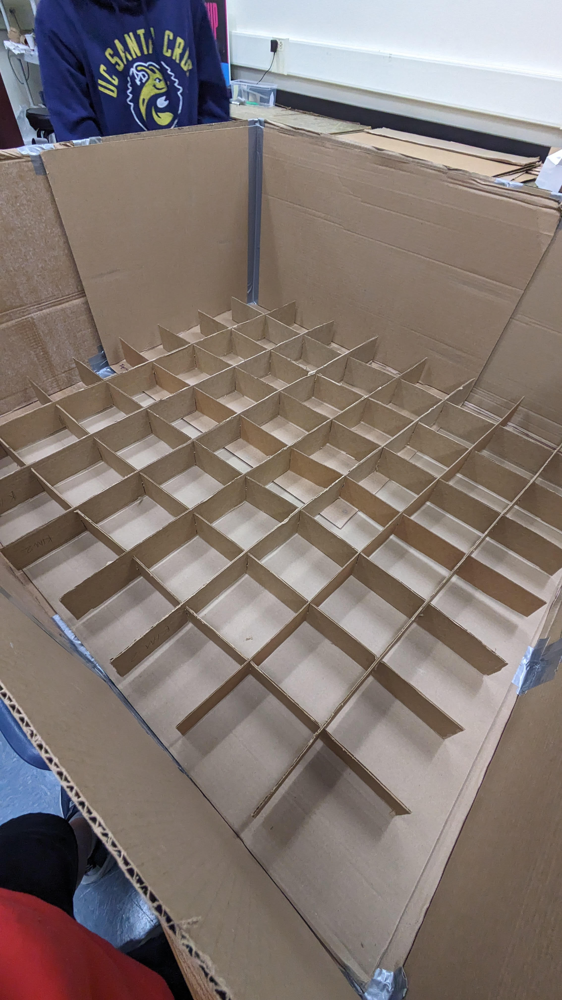
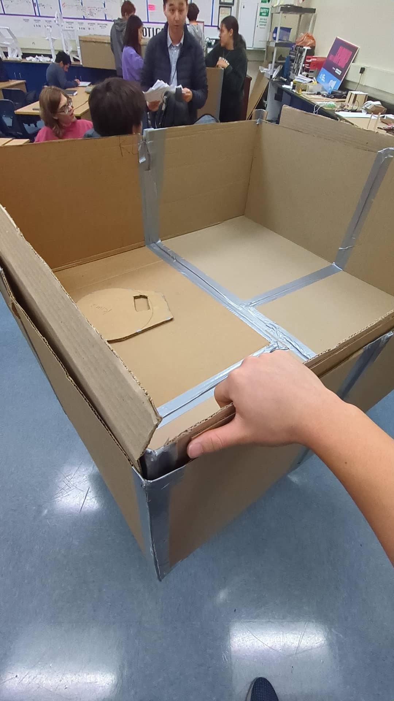

Intro to Engineering Journal

8/25/23 - This is my first journal entry: Today we faced a challenge in which we were using several pipes to transfer a marble down to a bucket on the floor. There were several rules like not letting the marble go backwards or not overlapping the pipes together so it is easier. In the beginning there were a lot of conversations to determine how we would arrange the pipes so the marble wouldn't move too fast and eventually drop on the floor. The marble still dropped on the floor so we kept coordinating our plans and eventually succeeded before the other team did. From this problem I learned an important lesson that conversing with your teammates and coming up with important strategies is a good way to succeed in something.
9/8/23 - This is my second journal entry:
Today we learned about the Rube Goldberg machine where you use the wheel and axle, pulley, lever, inclined plane, wedge, and screw. We used these ideas to create a machine in which the baseball would follow these mechanics and eventually make a needle pop a balloon. My group focused on a guillotine type of system in which the baseball would trigger a toy car to go down an inclined plane and trigger another pulley like system to cause a guillotine with a tungsten cube to go down on a balloon and pop it.

9/15/23 - This is my third journal entry:
Today we finished creating our Rube Goldberg Machine, The Tungsten Guillotine. Although the balloon we had to use was a water balloon which is smaller than the regular balloon, our project finished successfully and it turned out amazing. It felt really satisfying when the cube just dropped on the balloon. I think this project was really fun and helped me learn how important teamwork is and the creativity that is developed from the strong teamwork that was developed between our group. In the beginning we were having multiple conflicts considering whether or not we should buy a tungsten cube to actually make something like this, and we also was planning a different prototype to be used. However, with a lot of coordination, we were able to make a better prototype and it succeeded in helping us make the Tungsten Guillotine.
9/27/23 - This is my fourth journal entry:
Today Joseph and I dissected a desktop computer. We first took out the cover and continued on throughout the computer, identifying which parts or which parts and learn even more about computer engineering. Computer engineering is an interesting topic for me so I think I focused a bit more during this computer dissection as it was my first time dissecting one. We also had to identify which cables are connected to which so we also took a photo of that to keep track on what we are doing. When I saw the CPU I thought it looked really cool with the small pins and I also learned how delicate I have to be when handling a computer. I think this Computer Dissection was rather fun and I enjoyed the time I had when I did it. When we followed the step backwards to reorganize and put the parts back into the computer, we faced somewhat of a problem but we cooperated well and I believe that was important.
10/6/23 - This is my fifth journal entry:
Today Joshua and I were focusing on the bioengineering section of intro to engineering where we made a prosthetic hand. This was rather confusing in the beginning for me because I did not know how long the finger lengths should be nor how it would bend on will and grab an empty water bottle. However, Joshua had a great idea and we went to building the prosthetic hand. Our hand took longer to make than other groups and we also used a ton of duct tape. After making it we put rubber bands on both sides of the fingers so it can bend but we realized that would be a problem so we only put one rubber band on one side and use strings to tie the hand up and make it bend using a holder below the palm. I think this project was fun and required a lot of creativity which definitely piqued my interest for bioengineering.

10/16/23 - This is my sixth journal entry:
Today Joshua and I worked on the aerospace section of engineering. Our task for this section of engineering was to build a bottle rocket which was tested in the lower field to see who could launch it the furthest. Joshua and I forgot to bring a bottle to make the bottle rocket but thankfully Mr. Kim gave us a leftover coke bottle that we were able to use. We cut up small pieces of cardboard pieces into a rhombus shape and attached it to the bottom side of the rocket. We used larger triangles at the other end of the rocket to possibly make it penetrate through the air more and go further. However, when we tested it out, our plan did not go as expected and it instead flew sideways and go almost straight up.
10/23/23 - This is my seventh journal entry:
This week, Joshua and I indulged into the wonders of environmental engineering. This topic of engineering was quite a beauty and a wonderful thing to witness as it helped the environment strive and become a better area to live in. For our task, we were given dirt water and we were supposed to create a filter to clean out the water to make it cleaner than usual. Joshua and I used a double filter mechanic where we cleaned the water in the beginning by putting rocks and cotton balls and smaller rocks on the top. Then we shoved lots of cotton balls on the very bottom of our filter to double filter the water and make it cleaner. However, our plan did not work as planned, but it still made the water somewhat cleaner, which was part of the task. We learned a lot about the idea behind environmental engineering and how important it is in modern day society.

11/2/23 - This is my eighth journal entry:
Today we focused on a new engineering topic called electrical engineering where we focus on the appliances that rely on electricity. We used the tinkercad website to cad a design in which a battery powers an LED using resistors and negative and positive electrical conduction. It was kind of difficult but I think the cycle was pretty interesting.

11/9/23 - This is my nineth journal entry:
This week, Joshua and I furthered our progress on the idea of electrical engineering where we used diodes, resistors, and a breadboard to try powering the diode in multiple ways and also power multiple diodes at the same time. This time we used an arduino which is also known as a mini computer. We connected the arduino with a USB port to our computer and downloaded a compiler that ran commands and helped the diode either blink then pause or even make the light fade. It was pretty cool but there were some difficulties due to the fact that we couldn't download the arduino compiler for some reason but also when placing the diodes and resistors on the breadboard. I learned that electrical engihneering is not as simple and easy as it sounds and requires resilience with your partner to solve the problems that are discovered.
11/9/23 - This is my tenth journal entry:
This week, we learned about Business Engineering and the marketing behind everything. We watched a SharkTank video and we were tasked to work and pitch an idea like SharkTank. Instead of working with Joshua, I worked with Joseph this week. In the beginning we had absolutely no idea as to what pitch idea to come up with. However, we decided to come up with an app called PenShift. This app converts illegible hand writing into text and helps in reading. This was a cool idea because many people like teachers or patients in hospitals need it especially when you try to identify what your doctor is prescribing you or what you are symptomed with. It was a fun project and we presented in the class, but there were some stupid questions that people were asking.
12/4/23 - This is my eleventh journal entry:
This week, we learned about Civil Engineering. Our task was to build a bridge out of spaghetti that is approximately 2 feet long and try withstanding as much weight as possible while being not too heavy.
1. The weight of our bridge was 46.8 grams.
2. The weight held by our bridge was 1009 grams.
3. The ratio of weight of to weight held is 21.5 grams of water per gram of bridge.
4. The heaviest part of our bridge was the middle. The amount of spaghetti and glue we used contributed to the reason why the middle of our bridge was heavier.
5. We researched other spaghetti bridges that were on the tables while drying. We noticed that one of the bridges had strong reinforcement and attempted to build our bridge off of that.
6. We tried adding even more reinforcements to the bridge. However, it did not work as intended so it was actually quite disappointing, we expected it to withstand more weight.
7. Both ends of our bridge was the weakest point on it because we did not make it long enough and also it was not too strong. Yes, that was the expected weakness.
8. Instead of over reinforcing the middle part of our bridge, I think reinforcing it equally across the entirety of the bridge might've made it stronger and withstand more weight.
First Journal of Second Semester - Chemical Engineering: Oobleck.
For the first project of this semester we adapted our chemical engineering skills to make oobleck. Oobleck is a substance that can behave like a solid or liquid depending on the amount of force applied on the oobleck. We were given how ever amount of corn starch powder and water we need and mix it and we mixed it on a water 1 and corn starch 3 ratio. We realized thi project seems quite simple but it requires common knowledge of applying proportions.
1/29/24 - 2/26/24 - This is my twelvth and thirteenth journal entry:
For the past 5 weeks, we adapted our electrical engineering skills into making an arduino car.
For the first week, we researched about the arduino car. An arduino is a small circuit board that can be programmed physically and also through software, as users can program through their computers to initiate certain codes that they want their arduino to run. Arduinos are used with LEDs, motors, speakers, and even cameras. This project requires mediocre programming skills, understanding of electrical engineering, and execution of mechanical engineering to design the car in a way that it can actually move successfully. The car will move by electrically powered wheels and operate by battery. However, the speed of the car will depend on the weight of the car due to Newton’s laws of force. The car will be programmed to move it forward, and in some cases, must be programmed to navigate through obstacles. My inspiration for the car came from the research of videos and the beauty of the way the arduino car works.
During the second and third week, we coded the arduino so that it can initiate some actions that include making the car move. The coding part was actually pretty simple, it just required common sense and knowledge of how the engines would work and you would have to decide between HIGH and LOW outputs of each wire so that the car can either go forward, backward, or sideways.
On the fourth week, we used a tinkercad that we created on week three to connect the wires to its designated spot and help make the code run successfully.
Finally on the fifth week, we tried to initiate the code but a lot of problems surfaced. First of all, we realized that our design was way too compact and that the wheel had a hard time spinning due to the duct tape. Also, when connecting the wires we accidentally connected the power wire to the ground so it stopped us from initiating the code and activating it. Other than that, we successfully updated our arduino car to mkae it move forward, sideways, and backwards but we didn't have enough correct planning to try using a sensor and making the arduino car move accordingly to the objects that could possibly be in the way.

This is my fourteenth journal entry:
This week, we were given the duty to cover an egg in whichever method we can and stop it from cracking when dropping from a three story building, hence the project was called Egg Drop. This time we had a change in partners and I worked with Joseph and we both concluded on the idea to make a box and surround the egg with cottons inside the box. We also implemented a parachute using the trash bag we were given. Our tinker cad doesn't have the box part but it has an attempt on making a plastic bag and an egg surrounded by cottons.

This is my fifteenth journal entry:
After successfully building the egg drop design, we simulated our egg drop but the box made a huge sound when it dropped and it scared me, but thankfully the egg was secure and we managed to execute our egg drop project successfully.
This is my sixteenth journal entry:
This week, Mr. Kim gave us a quick sneak about the final project towards the end of the year going to be related to building a big boat. To prepare for that, our mission this week was to build a boat that can fit in a rain gutter and travel as far and possibly as fast as it can. We also had limited dimensions for making the boat to match it with the rain gutter. Our boat was made out of paper and we reinforced the front and back of it using popsicle sticks and duct tapes and curved the paper so it can fit in the gutter. We didn't notice that the sail would be crucial in helping us travel the boat much easier, but we still made a sail out of post it notes. I think this project was really fun but also challenging because we didn't have an idea as to how we should make the boat in the beginning but who would've known that our boat would be the best. Our boat travelled the furthest which was 410 centimeters. My partner was Joseph and I think Joseph and I maintained a good teamwork for this project and learned a lot from it about how a boat works.
This is my seventeenth journal entry: This week, we concluded our design for the boat for the final project. Our boat would have two boats inside each other so that we can have extra protection and we also decided to put a honeycomb design on the bottom of the first boat so that it can help with the buoyancy of the boat and also protect it from any water leaking in. This requires a lot of cardboard and duct tape. Thankfully, each group was given an entire roll of duct tape which equates to approximately 180 feet of duct tape. In the beginning, I thought we wouldn't need this much duct tape, oh how wrong I was. Anyways, we used 4 pieces of cardboard for each boat and folded them so we can combine them into one entire box. This required a lot of duct tape because we wanted to cover up the corners a lot where water could possibly leak.
This is my eighteenth journal entry:
This week, we started constructing our boat. Duncan, Joseph, and I focused on the build of the boat while Joshua worked on the oars that we will use for the boat. However after we finished the two boats that we will put on top of each other, we started making the honey comb design and Joshua and I worked on that. We also decided that Joseph and I will be entering the boat.

This is my nineteenth journal entry:
This week, we finalized our build for the boat and walked down to the pool to get on the boat and go across the pool and come back. Almost all the groups failed at going across the pool and coming back. However, our group and another group managed to go across and come back and therefore we were the true winners of the boat building project. Yay! This is our final engineering project and throughout the entire school year, I think I learned a lot about critical thinking and the required creativity for many projects.
